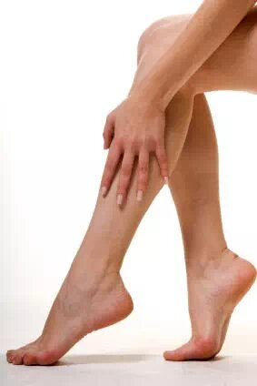
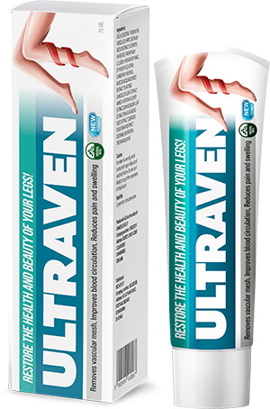
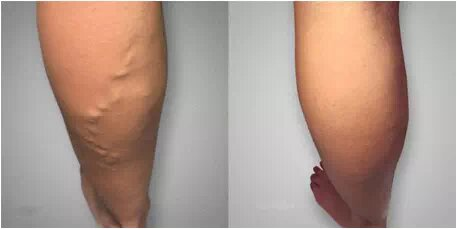
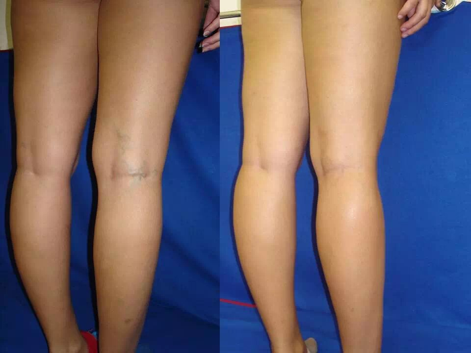
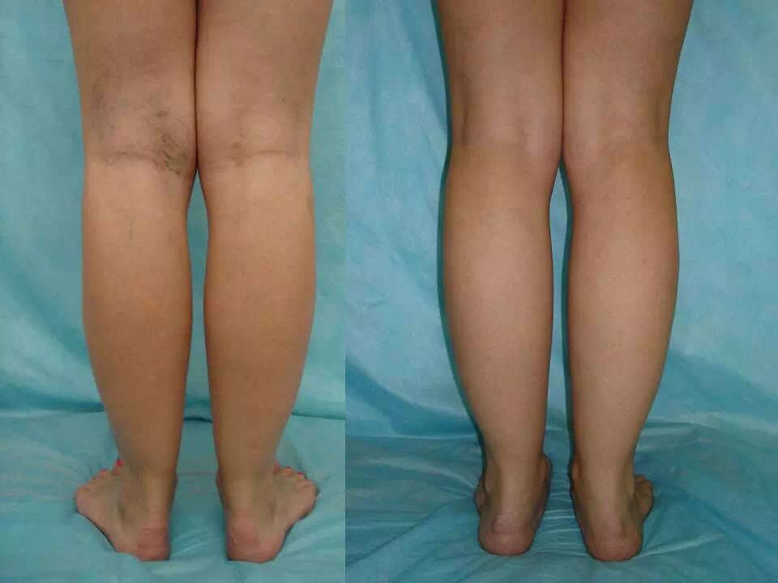
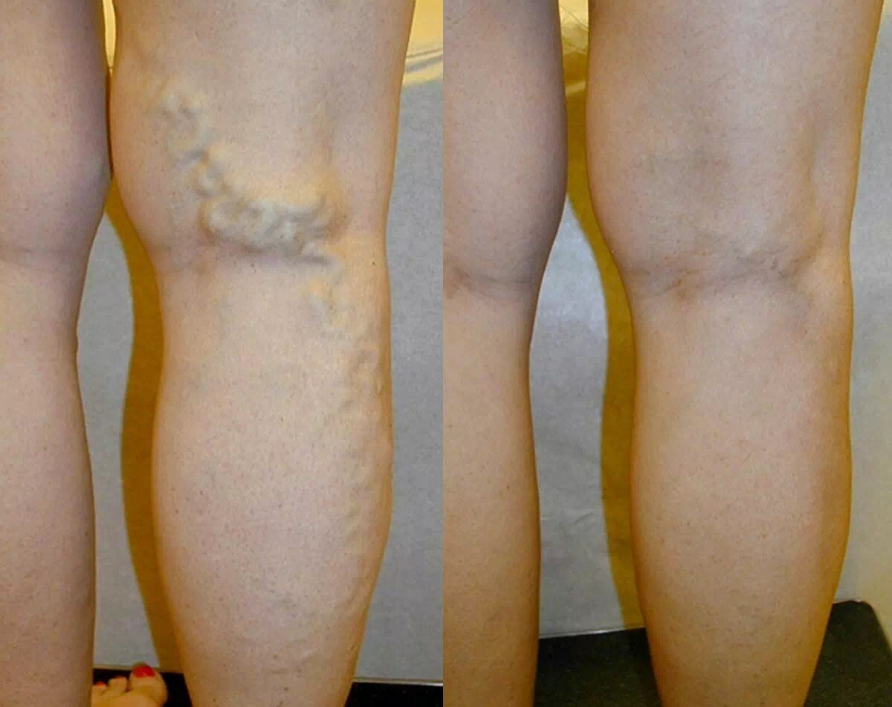

Camelia
Cum am scăpat de varice în 3 săptămâni
Postat: | Autor: Camelia
Salut dragii mei! Astăzi vreau să împărtășesc cu voi micul meu secret... Mă consider incredibil de norocoasă. Pentru că am putut SCĂPA de vene varicoase acasă în doar trei săptămâni!
Vă amintiți cum cu mai puțin de un an în urmă m-am plâns în blogul meu despre dureri teribile în picioare din cauza venelor varicoase care se dezvoltă rapid? V-am cerut sfatul pentru a-mi rezolva problema cât mai curând posibil.
În cele din urmă, am încercat fiecare remediu disponibil care mi-a fost recomandat - inclusiv unguent de sare și muștar, compresă de frunze de mesteacăn etc. De asemenea, am luat medicamente pentru a îmbunătăți circulația și am purtat ciorapi de compresie. TOATE ASTA SUNT PROSTII. Nu ajută. Nici nu merită încercat
Am fost la medic, dar în loc de ajutor, am fost sfătuită să amân tratamentul. „Încercați să vă odihniți și să nu vă obosiţi picioarele”, a spus medicul. Un sfat grozav. Ai crede că ajută! Dar mi-am luat concediu neplătit pentru o săptămână. Pur și simplu nu știam ce să fac ... toate gândurile mele erau ocupate de această boală cumplită! M-am tot gândit cum să scap de varicele care mi-au desfigurat picioarele și îmi ofereau un disconfort teribil. Am visat să elimin în sfârșit varicele din viața mea și să-mi întorc picioarele frumoase și sănătoase înapoi. Așa că am început să caut din nou pe internet diferite tratamente.
Este un tratament eficient pentru varice în cele din urmă găsit?!
Privind prin diferite forumuri tematice despre varice, am observat o mică postare a unui flebolog din Bucuresti. El a susținut că tratarea varicelor sunt ineficiente la noi, deoarece medicina tradițională nu tratează cauza bolii, ci doar simptomele ei.
Cu toate acestea, medicul a subliniat un nou gel pentru varice numit El a spus că datorită lui, mulți dintre pacienții săi au primit rezultate bune. Am căutat informații despre cum să comand acest gel și am găsit un magazin online - acesta este site-ul oficial al producătorului.
Doctor în ştiinţe medicale, chirurg vascular. Realizează consultații de specialitate și examene neinvazive (ultrasonografie Doppler) ale extremităților inferioare și superioare la pacienții cu vene varicoase și tromboză.
Experiență profesională: 25 de aniÎn România 50% din populație suferă de boli venoase cronice, iar 13% au deja un proces patologic în dezvoltare intensă: tromboflebită, ulcere, dermatită etc. Dar tratarea la timp a varicelor ar evita aceste și alte probleme de sănătate. Astăzi există - un remediu eficient şi modern pentru acest lucru. Într-un 1 curs, gelul regenerează complet vasele de sânge deteriorate, ameliorează inflamația și elimină venele dilatate și plasa de păianjen de pe piele fără a afecta negativ organismul. Nu vă faceți griji, începeți tratamentul cu astăzi pentru a vă menține picioarele sănătoase și frumoase pentru anii următori. Fiţi sănătoşi!
Nu prea credeam în succesul unui alt produs de neînțeles, pentru că sunt atât de multe publicităţi la televizor ... dar nu are rost! Dar totuși m-am întrebat - ce se întâmplă dacă exact asta mă va ajuta? Am început să studiez toate informațiile despre - compoziție 100% naturală, efect rapid și o mulțime de recenzii pozitive. Desigur, am decis să-l comand şi să-l încerc personal.
Ce este ?
Gelul vegetal multifuncțional pe bază de ingrediente 100% naturale, într-un mod complex combate primele semne ale varicelor și ale manifestărilor sale cronice. Ingredientele active pătrund instantaneu în piele și încep un proces intensiv de regenerare a țesuturilor și vaselor de la prima aplicare.
Testele clinice efectuate în ianuarie 2021 la Institutul de Cercetări Flebologice din Elveția au dovedit că, în 1 curs, produsul elimină în mod eficient toate simptomele și semnele externe ale varicelor și, de asemenea, îmbunătățește starea pielii, făcând-o mai fină, mai tânără și mai elastică. Este suficient să aplicați gelul de 2-3 ori pe zi pe zonele cu probleme timp de 4-6 săptămâni (în funcție de gravitatea varicelor).
Curierul mi-a livrat în doar 4 zile. Am luat cutia și am citit cu atenție instrucțiunile.- Etapa 1: Mentolul îmbunătățește fluxul sanguin în venele extremităților inferioare, reduce durerea, ameliorează spasmul, tensiunea musculară și oboseala picioarelor.
- Etapa 2: Extractele de semințe de castan de cal și coaja de stejar elimină procesul inflamator din vene. Troxerutina crește tonusul vascular și face pereții venelor superficiali și profunzi mai denși și mai elastici. Aceasta elimină riscul de a dezvolta sângerări venoase mortale.
- Etapa 3: rădăcina de mătură de măcelar, extractul de arnica și pătlagina subțiază sângele și îmbunătățesc circulația sângelui. Astfel, fluxul de lichid limfatic este normalizat - și cheagurile de sânge se dizolvă.
- Etapa 4: Extractele de frunze de ginseng și ginkgo biloba normalizează funcționarea valvelor venoase, iar pompa musculară începe din nou să pompeze sângele către inimă prin venele profunde, nu venele safene. Datorită acestui fapt, excesul de sarcină din venele superficiale este ușurat și sângele circulă din nou liber. Ca urmare, vasele sunt vindecate și încetează să iasă deasupra suprafeței pielii - iar plasa capilară dispare.
Datorită proprietăților sale unice, este considerat meritat cel mai bun produs pentru tratamentul eficient și prevenirea fiabilă a varicelor.
Care sunt rezultatele? Acest gel a vindecat varicele?
Am urmat toate instrucțiunile producătorului - mi-am aplicat gelul pe picioare dimineața și seara și am masat ușor până la absorbția completă de jos în sus - de la gleznă la coapsă. Și apoi mi-am pus ciorapi de compresie pentru cel mai bun efect. Şi ce credeţi? Doar în 3 zile umflarea și durerea au scăzut. Și o săptămână mai târziu varicele de pe picioare au devenit mult mai puțin vizibile. Am fost atât de impresionată încât nu o pot descrie în cuvinte! Acest gel funcționează cu adevărat și în curând pot să scap complet de problema mea?! Rezultatele sunt deja impresionante, în doar 7 zile! Nu-mi venea să cred ochilor... venele urâte de păianjen care mi-au otrăvit viața mult timp, în cele din urmă au început să dispară. Și cel mai important lucru - nu m-au mai durut picioarele! Medicul respectiv de pe forum a spus adevărul: acest gel este cel mai bun remediu pentru varice care există astăzi! Nici un alt produs pe care l-am încercat înainte nu a avut un efect atât de minunat! Nu pot descrie cât de fericită am fost. Și bineînțeles că am continuat să folosesc ...
Și după alte 2 săptămâni picioarele mele pareau noi! Pielea a devenit moale ca catifeaua! Umflarea a dispărut complet, mersul a devenit ușor și cochet ... ca în tinerețe! Pentru prima dată în ultimii ani, m-am simțit ca o persoană absolut sănătoasă. Și nimic nu îmi mai strica dispoziţia- venele nu mai erau umflate și nu ieșeau în evidență pe piele. Ura!
Ca să fiu sinceră, sunt chiar recunoscătoare pentru boala mea! Varicele m-au învățat să apreciez mai mult ceea ce am. Picioarele frumoase și sănătoase sunt grozave! Este chiar înfricoșător să mă gândesc ce s-ar fi întâmplat dacă nu aș fi aflat despre . Am decis că după ce voi termina cursul tratamentului cu acest gel, voi scrie cu siguranță o scrisoare de mulțumire acelui flebolog. El mi-a schimbat viaţa! Dar alți medici tac despre acest produs - se ascund sau pur și simplu nu știu despre el ... Și acest lucru este trist, deoarece mii de femei din România și chiar peste tot în lume ar putea scăpa de insuficiența venoasă cronică cu mult timp în urmă cu acest remediu.
Specialist în chirurgie vasculară în București. Membru de onoare al Societății Române de Chirurgie Vasculară (SRCV)
Experiență profesională: 10 aniVaricele nu sunt doar o problemă estetică, ci și o lovitură gravă pentru sănătatea umană în general. Astăzi cel mai bun tratament profesional al varicelor la domiciliu este gel! Testele clinice au confirmat eficacitatea ridicată a produsului în prima săptămână de utilizare. În acest timp, toate simptomele neplăcute ale bolii au dispărut la 87% dintre pacienți: durere, convulsii, umflături la nivelul picioarelor. După alte 2 săptămâni, a existat o regenerare intensivă a vaselor de sânge și, ca urmare, umflarea venelor a dispărut. Și la sfârșitul cursului de tratament (4-6 săptămâni), varicele au dispărut complet la 100% dintre pacienții care au luat parte la testele clinice. Nu întârziați tratamentul, varicele progresează rapid - scăpați de ele odată pentru totdeauna cu ! Eu și pacienții mei suntem deja convinși: funcționează 100%.
Și deși eu deja am învins varicele datorită în doar 3 săptămâni, totuşi nu am neglijat recomandarea producătorului. El recomandă utilizarea zilnică a gelului timp de 1-1,5 luni pentru a elimina complet toate simptomele și cauza bolii. Așa că am aplicat pe picioare încă o săptămână pentru a consolida efectul. Sunt sigură - varicele nu vor mai reveni! Am fost foarte norocoasă să aflu despre acest produs, altfel, în timp, ar trebui să fac scleroterapie a venelor ... Este destul de scump și, în plus, recidivele bolii sunt posibile în viitor. Și cu totul sa dovedit rapid, ușor și destul de ieftin! Gelul are un miros plăcut, nu este lipicios și se absoarbe rapid. Compoziția conține doar ingrediente naturale fără chimie - extracte medicinale din diverse plante, flori etc. Și știţi ce am înțeles? Majoritatea oamenilor sunt convinși (și așa am crezut şi eu!) Că lucrurile cele mai simple nu pot fi eficiente. Dar cele complexe, cum ar fi intervenția chirurgicală, sunt mult mai eficiente. Dar nu este cazul! Și am fost convinsă de asta din propria mea experiență! Oricine poate vindeca varicele cu o metodă simplă, rapidă și sigură - gel. Și pentru asta nici nu trebuie să ieși din casă. Verificat!
Pentru cei interesați, am comandat gelul pe acest site. Acesta este singura companie certificată în România care vinde Comanda este livrată undeva în termen de 2-6 zile (eu am primit-o în 4 zile). Plata la primire. Este foarte convenabil și sigur. După plasarea comenzii dvs., un consultant vă va suna, vă va răspunde la toate întrebările și vă va ajuta să alegeți cel mai bun tratament. Am aflat o mulțime de informații utile nu numai despre produsul în sine, ci și despre tratamentul simultan cu gelul - duș de contrast, masaj etc.
Apropo, acum prețul pentru este mult mai mic decât de obicei, este o reducere de 50%. Vă sfătuiesc să vă grăbiți cu comanda!
Sper că experiența mea personală în tratarea varicelor v-a ajutat și veţi încerca pentru a scăpa de problema dvs. cât mai curând posibil. Veți vedea - veți căpăta din nou picioare frumoase și sănătoase în doar 3-4 săptămâni. Succese tuturor!


Felicită-mă)) Mi-am învins varicele cu ajutorul Un produs cu acțiune foarte rapidă. Nu mă așteptam la un rezultat atât de instant!
